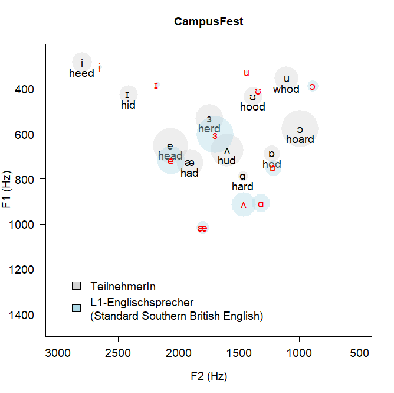

What I do
Research & Projects
Computational corpus linguistics · Digital discourse · Language data science · AU$16M+ in research funding
Research Profile
In my research I have mainly taken a variationist approach to statistically modelling linguistic variation within and across non-standard and post-colonial varieties of English. While I have mostly relied on corpus data and used R and RStudio to investigate linguistic phenomena, I have also engaged in acoustic analyses of audio data using the Bavarian Archive for Speech Signals’s The Munich Automatic Segmentation System (MAUS) and Praat, and have used questionnaire designs and experimental methods including web-based eye-tracking during my time at the Arctic University of Norway. I also have an interest in language documentation, anthropological linguistics, and fieldwork methods.
One basic issue underlying my research is to investigate how, why, and to what extent social, cultural, and psychological factors shape linguistic behaviour — not merely to describe differences between speaker groups, but to elucidate the mechanisms driving language change. I have become particularly interested in how semantically bleached elements such as discourse particles and degree adverbs (intensifiers) pattern across varieties and change over time. An article for which I won the ISLE Richard M. Hogg Prize in 2015 exemplifies this line of work, investigating psycholinguistic and social determinants of discourse eh in New Zealand English.
A major current focus is the analysis of discourse on social media, especially vulgarity and impoliteness in online and public discourse. Another abiding interest is reproducibility and open science in corpus linguistics — I have given talks including a plenary at ICAME 42 and co-edited a special issue of IJCL on this topic.
Digital Humanities
In 2019, I was a Digital Champion on behalf of the Australian Research Data Commons (ARDC) and I continue to promote digital methods in HASS by offering workshops on computational methods and giving talks about best practices in research data management and methodology.
In my current role at the School of Languages and Cultures, I established the Language Technology and Data Analysis Laboratory (LADAL). LADAL is a free, open-source, collaborative support infrastructure for digital and computational humanities, established in 2019 at the University of Queensland. Its tutorials and interactive notebooks have been accessed by over 500,000 users worldwide and have been viewed over 1.1 million times.
Methodological Competencies
My research builds primarily on quantitative analyses of corpus data and computational analyses of speech. I have specialised in multivariate regression models (fixed- and random-effect) and tree-based models (Conditional Inference Trees, Random Forests, Boruta) for testing the impact of independent variables and their interactions on a dependent variable. I also have substantial experience with exploratory and dimension-reduction methods including cluster analysis, correspondence analysis, and Semantic Vector Space Models, as well as NLP methods such as sentiment analysis, topic modelling, and word embeddings.
Activities in the Scientific Community
I am a member of the International Society for the Linguistics of English (ISLE), the Societas Linguistica Europaea (SLE), and the Deutsche Gesellschaft für Sprachwissenschaft (DGfS). I regularly present at conferences, publish in internationally visible venues, and have organised conferences for both senior and early-career researchers, including ISLE 7 (Brisbane, 2023) and the CALL Research Conference (Brisbane, 2025).
Research Projects
1. Language Data Commons of Australia (LDaCA)
Australia holds large and diverse collections of language data, many stored in short-lived repositories or in siloed institutional archives. The aim of LDaCA is to consolidate these into a nationally integrated research data infrastructure of high strategic importance — establishing governance, access policy, shared technical infrastructure, a discovery portal, and community engagement to secure and make accessible Australia’s linguistic heritage, including Indigenous language materials.
My contribution focuses on producing open-access training and support resources through LADAL and on building the text analytics capacity of the broader HASS research community. The Australian Text Analytics Platform (ATAP), which I co-led as Chair of the User Advisory Group from 2021–2023, was developed under this umbrella before being integrated into LDaCA in 2024. ATAP filled the gap between generic text analytics tools and highly specialised custom code, developing an integrated, notebook-based platform for processing and analysing language data.
- Scheme: HASS Research Data Commons (RDC) and Indigenous Research Capability Program (ARDC)
- Role: CI & Steering Committee (Project lead: Michael Haugh)
- Funding period: 2021–2029 (Phase I: 2021–2023; Phase II: 2024–2029)
- ATAP scheme: ARDC Platforms Program, 2021–2023
Selected publications: LADAL chapter (Springer, 2021) · Replication crisis chapter (CUP, 2025) · Reproducibility & corpus linguistics, IJCL 2025 · COVID-19 Twittersphere, Big Data & Society 2021 · in prep.: Introducing LADAL (Language Resources and Evaluation)
Selected talks: ICAME 42 Plenary · ICAME 42 LADAL talk · ARDC eResearch Summit 2019 · ARDC Webinar 2019 · LDaCA & LADAL, LiRI Zürich 2024 · LADAL UEF 2020 · Computational Thinking in the Humanities 2022
2. Vulgarity and Bad Language in Online and Public Discourse
This is one of my most active current research lines, combining corpus-linguistic, sociolinguistic, and computational methods to investigate vulgarity, profanity, and impoliteness in digital and public discourse across varieties of English. Using large-scale Twitter/X corpora and spoken data, I examine the frequency, distribution, social patterning, and discourse functions of vulgar language across Australia, the UK, and the USA — and increasingly in spoken interaction across World Englishes more broadly.
The project spans multiple funded sub-projects: a UQ Digital Cultures and Societies Hub project on swearing on Twitter (2022–2023, AU$15,075), a School of Languages and Cultures Research Support project with Svenja Kranich at Universität Bonn (2024, AU$3,000), and contributions to an international collaborative network. I co-edited a special issue of Lingua (Bad Language and Vulgarity Online and in Public Discourse, 2025/26) with Paula Rautionaho and Kate Burridge, and have an article under contract as the editorial introduction to that volume. This research has attracted widespread media attention, including coverage on Channel 10 News, five ABC Radio programmes, The Guardian, Der Spiegel, CNN, and over 96 other media reports reaching an estimated audience of 205 million with an advertising equivalent of AU$1.9 million.
- Funding: UQ Digital Cultures and Societies Hub (AU$15,075, 2022–2023); SLC Research Support Scheme (AU$3,000, 2024)
- Collaborators: Kate Burridge (Monash), Michael Haugh (UQ), Mikko Laitinen & Paula Rautionaho (Univ. of Eastern Finland), Sam Hames (UQ), Marissa Takahashi (QUT), Svenja Kranich (Univ. Bonn), Amir Sheikhan (UniSA)
Selected publications: Vulgarity in Online Discourse, Lingua 2025 · Vulgarity intro, Lingua 2026 · submitted: F%$# Twitter (Corpora) · submitted: Swearing online (Digital Scholarship in the Humanities) · submitted: Pop Goes Profanity · The Conversation, 2025
Selected talks: FoEiA 2025 · ICAME 46 2025 · LMU Munich 2025 · UniSA 2025 · Universität Bonn 2024 · Universität Bayreuth 2023 · F%$# Twitter, LDaCA Digital Fellowship 2024
4. Adjective Amplification
This long-running research project investigates the amplifier (or intensifier) systems of varieties of English — how degree adverbs such as very, really, absolutely, and totally combine with gradable adjectives, how their frequencies and collocational preferences vary across national varieties and social groups, and how innovations spread through speech communities over time. The project spans diachronic corpus analysis, sociolinguistic modelling, learner corpus research, and L1-acquisition studies, and has produced some of my most widely cited work including the 2015 ISLE Richard M. Hogg Prize-winning article on discourse eh in New Zealand English.
Core questions include: what determines whether a new intensifier succeeds or fails in the lexical competition (totally vs awfully); whether psycholinguistic priming effects drive variability and change; how L2 learners acquire the variable use of amplifiers alongside native-speaker norms; and whether the same sociolinguistic constraints operate across Irish, Australian, New Zealand, Hong Kong, Indian, and Philippine English.
- Funding: School of Languages and Cultures Targeted Research Support Scheme (AU$5,440, 2020–2021); ZFF Universität Kassel (€3,000, 2018–ongoing)
Selected publications: Adjective amplification, World Englishes 2024 · Australian English amplifiers, AJL 2021 · Irish English intensifiers, Anglistik 2021 · very among L2 learners, IJLCR 2020 · AmE fiction, JB 2020 · Modeling amplification, JB 2022 · Waning forms, JB 2021 · under revision: Priming in NZE (ELL) · in prep.: L1-acquisition of amplifier variation
Selected talks: JAECS 2020 HK/Indian/Philippine · ISLE 6 2021 waning forms · ICAME 40 2019 · ICAME 38 2017 · ISLE 4 2016 · ALS 2018 · AcqVA Aurora 2021 · Universität Innsbruck 2023
5. Discourse-Pragmatic Variation and L1 Acquisition
This project continues the research that grew out of my PhD dissertation on the discourse marker like in varieties of English. The overarching questions concern how pragmatic innovations — particularly discourse particles and markers — diffuse through speech communities, and at what age and in which order distinct functional variants are acquired by L1 speakers. I am investigating whether extra-linguistic social factors are acquired alongside the linguistic constructions themselves or whether the pragmatic structures are acquired first and sociolinguistic variation is added post-hoc. The project draws on corpus data from Irish, New Zealand, and British English and combines quantitative sociolinguistic modelling with developmental perspectives.
More broadly, this line of work connects to corpus pragmatics and the analysis of socio-pragmatic variation in Ireland and Scotland, documented in the edited volume I co-edited with Patricia Ronan (De Gruyter, 2024).
Selected publications: L1-acquisition of like, Functions of Language 2023 · like variability & change, IJGL 2019 · Speech-unit final like, EWW 2020 · like in Irish English, JB 2012 · Socio-pragmatic variation in Ireland & Scotland, De Gruyter 2024 · PhD dissertation, 2014
Selected talks: ICAME 33 Leuven 2012 · LCTG3 Greifswald 2011 · ICAME 31 Gießen 2010 · Leuphana Universität Lüneburg 2012
6. Language Documentation of Southern Low German
This project aims to create a speech corpus of one of the southernmost, as yet undocumented, varieties of Low German — Oberweserplatt, spoken in the region around the upper Weser river — to enable its documentation shortly before extinction. Oberweserplatt is endangered and has received no systematic linguistic documentation to date, making corpus creation urgent. The corpus is being developed through fieldwork using semi-automated transcription methods and will capture multiple registers and text types, with rich metadata about speakers, their social networks, and recording contexts. Beyond its archival and documentary value, the corpus will serve as a resource for variationist, contact-linguistic, and typological research on Low German.
7. Learner Language and Applied Linguistics
This project brings together my empirical and pedagogically-oriented work on how L2 learners of English develop their linguistic competence across multiple domains, including grammar, pragmatics, and discourse. A central concern is the relationship between learner corpus research and language teaching: by examining how learners pattern relative to native-speaker norms in large-scale corpora, this line of work generates actionable insights for curriculum design, written corrective feedback, and classroom pedagogy.
Key contributions include studies on how L1 background shapes the acquisition of amplifier variation (connecting directly to the Adjective Amplification project), an analysis of written corrective feedback and L2 error resolution (Journal of Second Language Writing, 2020), an investigation of Indonesian teacher trainees’ perceptions of data-driven learning (Applied Corpus Linguistics, 2021), a study of EAP students’ genre awareness in blended learning environments (Journal of English for Academic Purposes, 2021), and work on the use of corpus tools for L2 teaching and learning at undergraduate level. A broader methodological contribution is the examination of how learner corpus research and instructed second language acquisition can be combined as a productive methodological synergy (John Benjamins, 2025). Most recently, this line of work extends into intelligibility and pronunciation research, including a submitted paper on listener perceptions of intelligibility in multilingual contexts.
- Collaborators: Peter Crosthwaite (UQ), Naomi Storch (Univ. Melbourne), Yon Visioni (UQ), Yuki Komiya
Selected publications: Corpora and ISLA, JB 2025 · Written corrective feedback, JSLW 2020 · Indonesian teacher trainees, Applied Corpus Linguistics 2021 · Genre awareness blended learning, JEAP 2021 · Learner corpus research & teaching, ARAL 2020 · very among L2 learners, IJLCR 2020 · submitted: Intelligibility & pronunciation (ARAL)
Selected talks: Corpus technology for language learning 2021 · Corpus technology invited talk 2021 · CALL Research Conference 2025
8. VowelChartProject
The VowelChartProject developed a pedagogically-oriented tool for acoustic phonetics in the L2 classroom, combining corpus-based acoustic analysis with individualised student feedback. The project extracted vowel formants (F1 and F2) from recordings of German, Russian, and Spanish learners of English using Praat and R, measuring the degree of target-language proximity for each vowel and for word-final devoicing. Students produced word lists and a short story, and subsequently received a personalised vowel chart plotting their formant values alongside native-speaker norms for their L1 group — giving them concrete visual evidence of where their vowel production diverges from the target.
The project ran across three funding phases (€77,860 total from BMBF via L3Prof, Universität Hamburg, 2016–2018) and has since evolved into a broader research line on computational acoustic analysis of learner speech. More recent work extends the methods to L1-Japanese and L1-Chinese learners of English and deploys machine-learning classifiers to distinguish learner from native-speaker vowel production.
- Funding: BMBF via L3Prof, UHH (€77,860 across three phases, 2016–2018)

Selected publications: Komiya & Schweinberger, JB 2024 · Komiya & Schweinberger, SST 2022
Selected talks: ISLE 7 2023 L1-Chinese · ICAME 44 2023 · ICAME 43 2022 L1-Japanese · LiRI Zürich 2024 invited · Universität Kiel 2022 · Universität Freiburg 2023 · CuTLi 2017 VowelChartProject
(last updated 2026/05)